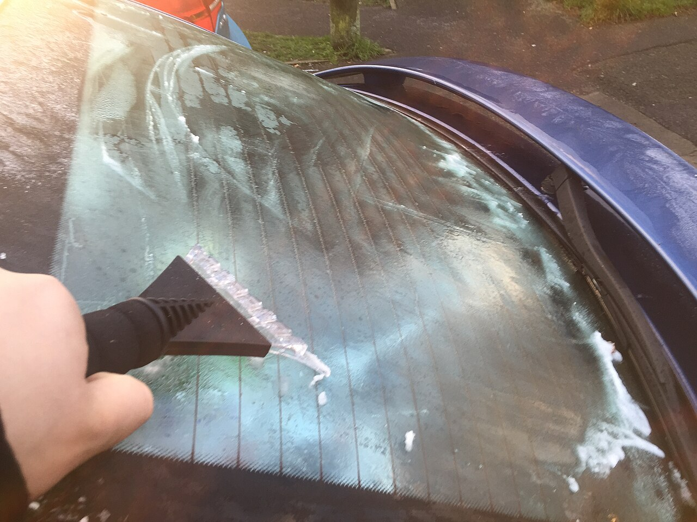

You're Scraping Ice Off Your Windshield Wrong
A metal scraper, a kettle of hot water, or your wipers will all cost you more than the ice ever would.

Photo: Bearas, CC BY-SA 4.0, via Wikimedia Commons

You're running late, the windshield is a solid sheet of ice, and you reach for whatever's close: a metal spatula from the kitchen, a credit card, the kettle. Or you just turn the wipers on and hope. Every one of those shortcuts can cost you money — scratched glass, a cracked windshield, or a set of ruined wiper blades. Clearing ice properly takes about the same time as clearing it badly. The difference is what you don't break.
Why it's wrong
A metal scraper or spatula will scratch your windshield. Glass is hard, but it's not that hard — a steel edge dragged across it with grit underneath leaves fine scratches that catch the sun and never go away. Hot water is worse: pouring boiling water on a freezing windshield causes thermal shock, and a windshield with even a tiny stone chip can crack straight across in one pour. And your wipers are not ice scrapers. Forcing frozen wiper blades across ice tears the rubber edge, and the motor strains against the resistance. Wipers are for rain and light snow, not for chiselling ice. Every shortcut damages something that costs real money to replace.
The right way
- Start the car and set the defroster to full heat. Aim it at the windshield. While the glass warms from the inside, the ice bond loosens from underneath.
- Spray a de-icer or a saltwater mix on the outside. A commercial de-icer spray works in a minute or two. In a pinch, lukewarm water with a splash of rubbing alcohol helps — never boiling water.
- Use a proper plastic ice scraper. A long-handled plastic scraper with a brush on the other end costs a few dollars and is the right tool for the job. Scrape in long, firm strokes, not short jabs.
- Clear the whole windshield — and the rest of the car. A peephole the size of a dinner plate is dangerous and, in many places, illegal. Clear all the glass, the mirrors, the lights, and the snow off the roof so it doesn't slide down onto the windshield at the first stop.
- Lift the wipers off the glass before a freeze. If freezing rain or wet snow is forecast overnight, lift the wipers away from the windshield so they don't freeze to it.
- Prevent it next time. A windshield cover, or even an old towel tucked under the wipers overnight, means no scraping at all in the morning.
The rundown
Heat from inside, de-icer on the outside, plastic scraper in your hand. No metal, no boiling water, no wipers as chisels. And clear the whole car, not just a hole to see through. Five minutes, done right, beats a cracked windshield every time.
← Back to the emergency kit guide